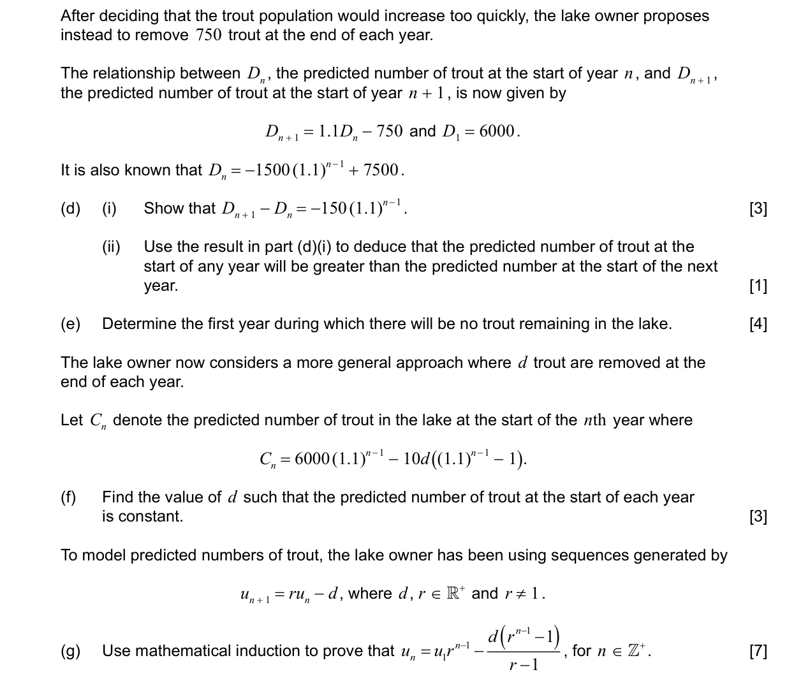
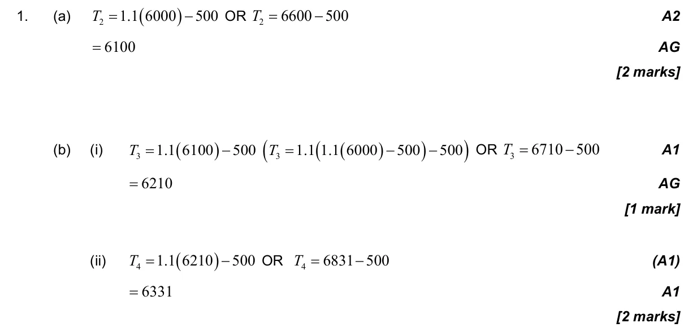
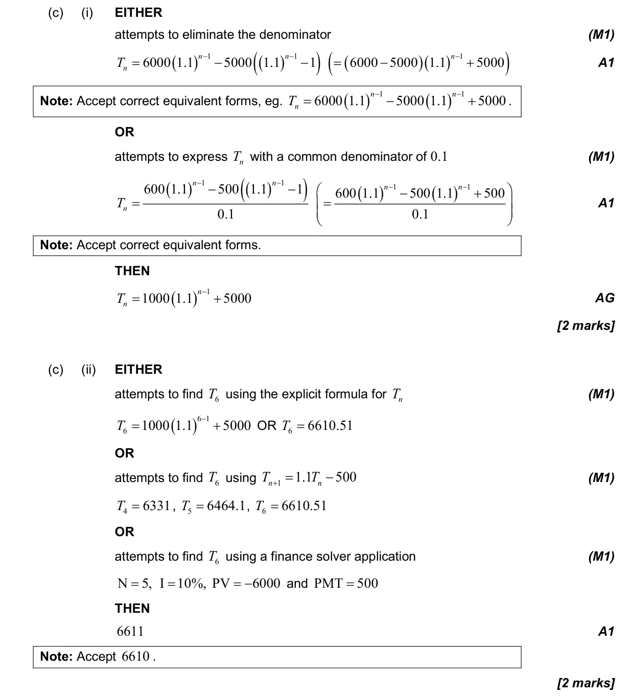
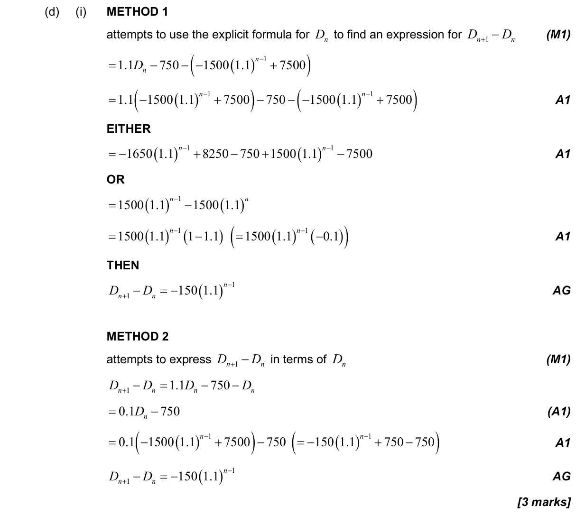
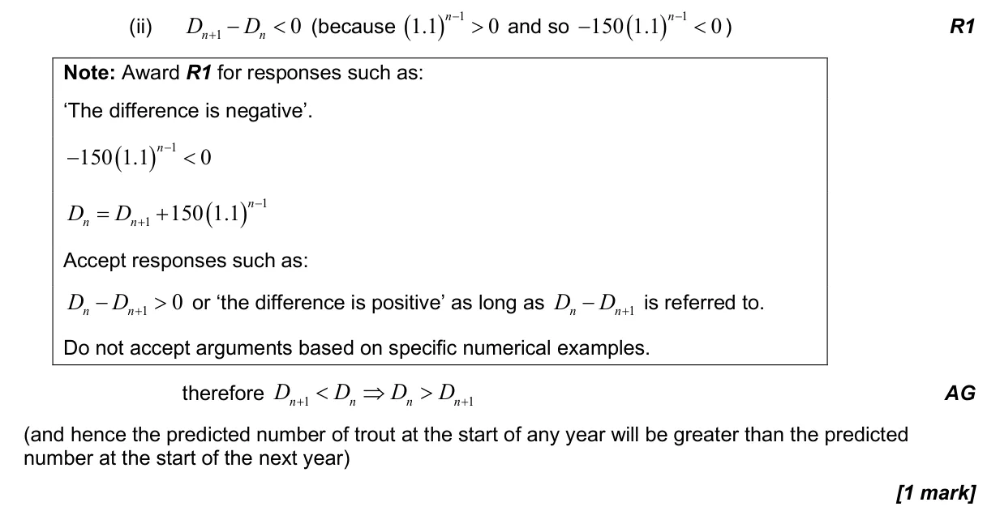
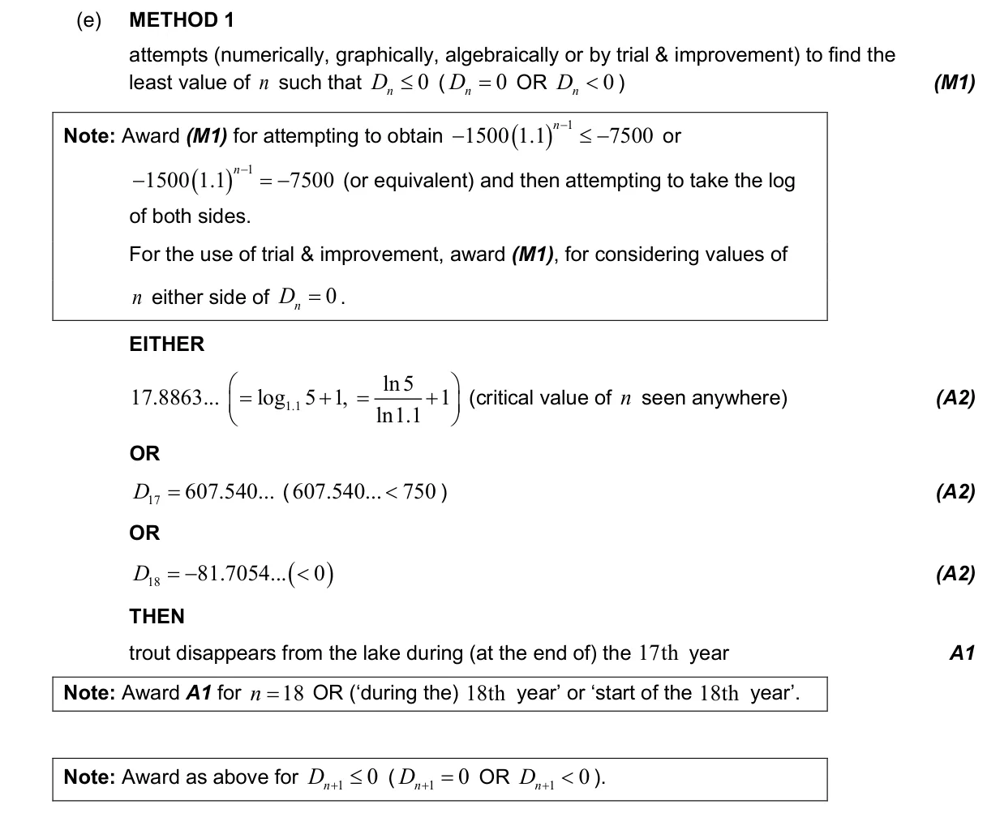
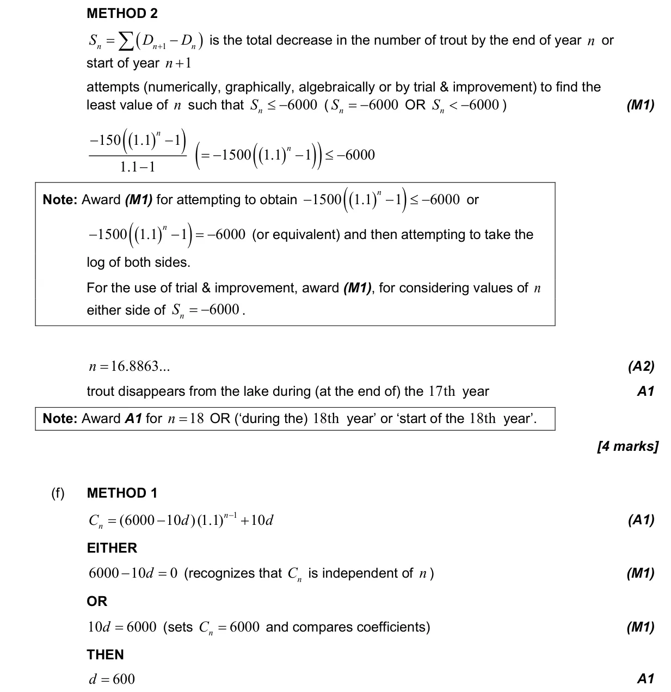
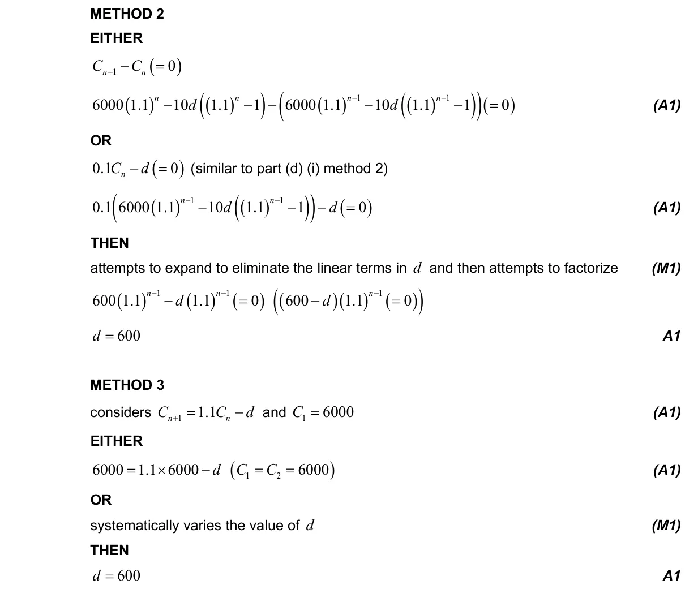
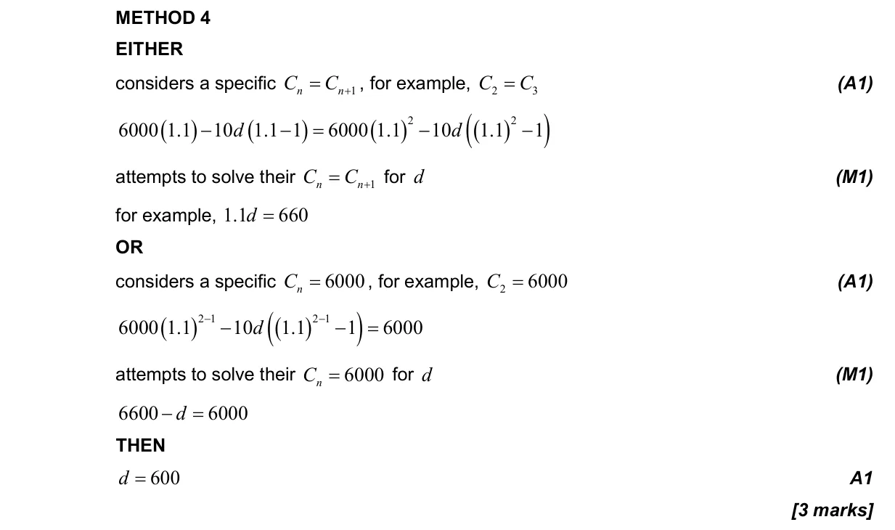
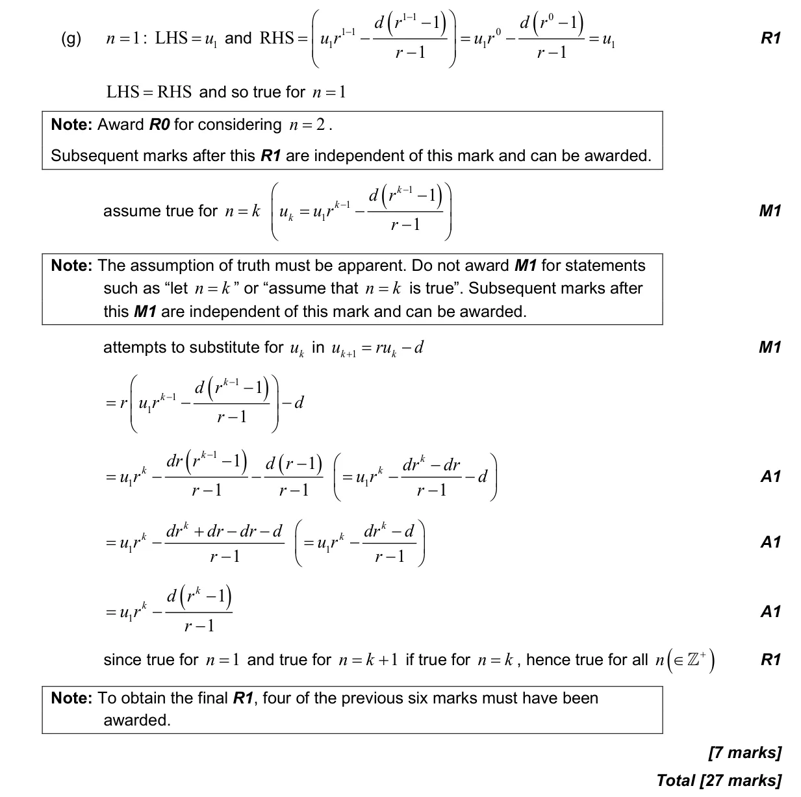

27 marks P3 TZ0 Calculator 1.3 Geometric sequences and series1.15 Proof by induction, by contradiction and by counterexample1.7 Laws of exponents and logarithms1.5 Laws of exponents with integer exponents and introduction to logarithms Question Hide breakdown ab(i)b(ii)c(i)c(ii)d(i)d(ii)efg Markscheme 